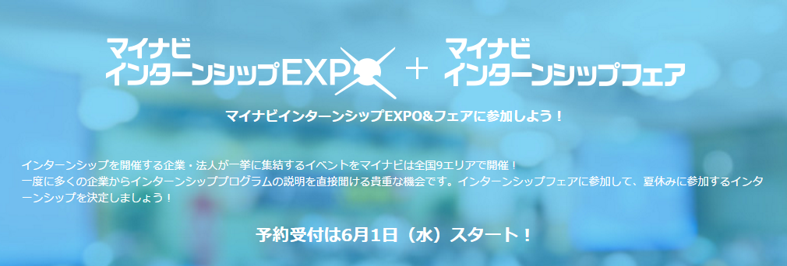
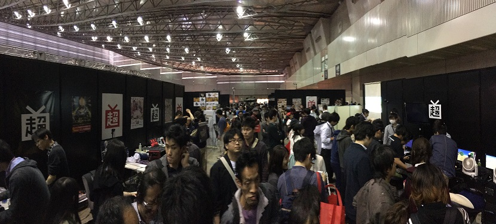

News
-
武田 竜平 wrote a new post, 白井セミナー振り返りまとめ, on the site 白井研セミナー 3年 10か月前
16/04/20 1回 顔合わせ ブログの書き方の説明
顔合わせ、Wordpressのブログ(当ブログ)の書き方の説明
16/04/27 2回 セミナーとIVRCの概要説明
白井セミナーの前期の目標説明、及びIVRCの説明
ここからIVRCの長い道のりが始まりました。
[…]

-
萩原 祥太 wrote a new post, 1423127 萩原祥太 これまでのまとめ, on the site 白井研セミナー 3年 10か月前
本セミナーの主旨:国際学生対抗VRコンテスト（IVRC）に挑戦
セミナーの活動まとめ
16/04/20 １回 顔合わせ ブログの書き方の説明
メンバー同士の顔合わせをして、ブログの書き方の説明を受けた。
16/04/27 ２回 セミナーやIV[…]
-
-
内藤 翔太 wrote a new post, IVRC2016を終えて, on the site 白井研セミナー 3年 10か月前
学籍番号1423108、内藤翔太です。
セミナーの初期から行っていたIVRCの反省を行っていきたいと思います。
全体を通していえることは協力、参加する回数が少なかったところです。
自分のアイデアを出す前に他のアイデアを出されてしまい、自分のアイデアを言えなかったことが多々ありました。
ではどうやって自分のアイデアを出すのか、と考えたところ得意の「イラスト」を使っては。となりました。[…]
-
浅野 隆弥 wrote a new post, 東京遠征① 浅野隆弥/Nerd、技術に触れる2, on the site 白井研セミナー 3年 10か月前
こんにちは、浅野隆弥です。
後半はGameOnになります。
GameOnは新旧のゲームが一堂に会する場で、古いものだとPongから新しいものだとPSVRなどが展示されていました。僕はあまりゲームが得意ではなく、ゲーセンとかも行かない人なので、ほとんどが始めて見るゲームでした。ゲーム自体は好きなんですけどね。
で、このGameOnは9つのステージに分かれていてそれぞれにテーマがあります。「プレイの誕生」や、「ゲームセン[…] -
浅野 隆弥 wrote a new post, IVRC投稿を終えて 浅野隆弥/Nerd、弱点を知る。, on the site 白井研セミナー 3年 10か月前
こんにちは、浅野隆弥です。
IVRCの投稿(+科学のひろば)お疲れ様でした。なかなかに苦しい戦いでした。
今回はIVRC投稿の反省会的な感じで書いていこうと思います。
まず反省点です。ザックリと上げると、
時間をかけた割りに文章がかけていない
頭の中のイメージがあやふや
一人で抱え込みすぎているですね。
一人で抱え込みすぎているせいで、他のメンバーが手持ち無沙汰にしていて、非常[…] -
内藤 翔太 wrote a new post, 第四回セミナー 内藤翔太 IVRCネタ選定と今後の目標, on the site 白井研セミナー 3年 10か月前
第4回では皆が持ってきたIVRCネタの中から一押しを一つ発表していきました。
皆が出したネタは―――。
・新宿クエスト
―新宿駅内をチェックポイントを通ってレース。
・バーチャル帰宅
―徒歩・電車・バスの混み具合や暑さを体験する。
・子供ジェネレータ
―カップルなどの2人の写真を撮って架空の子供を作り子育てしていく。
・千里眼
―普段と違う目線を体験する。
・バーチャル酔っ払い
―素面の状態で酔っ払い周り[…] -
浅野 隆弥 wrote a new post, 第四回セミナー 浅野隆弥/Nerd、これからを考える。, on the site 白井研セミナー 3年 10か月前
こんにちは。
1423145、浅野隆弥です。第4回セミナーでは、今年の目標の再確認と、IVRC応募に関する説明、IVRCの企画でディスカッションをやりました。
まず始めに今年の目標の再確認についてです。
今年の目標はインターンシップの獲得ですね。サブターゲットとしては資格の獲得などがあります。ちょうどTOEICの受付が今日からスタートしますね。後はCG-ARTs検定も出願期間中ですね。全ては就職のため、がんば[…]  -
浅野 隆弥 wrote a new post, 第二回セミナー 1423145 浅野隆弥/Nerd、インターンシップを目指す②, on the site 白井研セミナー 3年 10か月前
こんにちは 1423145 浅野隆弥です。[…]
-
武田 竜平 wrote a new post, IVRCを紹介する：VR元年マイナス一年とは -武田 竜平, on the site 白井研セミナー 3年 10か月前
こんにちは！武田です。
今回はIVRCの第23回(2015年)の作品を紹介します。
VRが話題になりつつあった年ということもあり、入賞作品全てがHMD(ヘッドマウントディスプレイ)を使った作品でした。
セミナーメンバーで記事割りを分担しますが、私は2015年を紹介します。
コピペ紹介・・・になってしまうので、入賞作品の考察を加えます。
総合優勝：1位
私をスキージャンプに連れてって[…] -
武田 竜平 wrote a new post, 「ニコニコ超会議2016」に行ってきました -武田 竜平, on the site 白井研セミナー 3年 10か月前
4/29に野営ゼミサボって(語弊)ニコニコ超会議に行ってきました。
本厚木駅始発乗車で7時30分頃着。待機列が長いのなんのその。
幕張メッセは[…] 
-
萩原 祥太 wrote a new post, 自己紹介 1423127 萩原祥太, on the site 白井研セミナー 3年 10か月前
はじめまして。
学籍番号1423127の萩原祥太（ハギワラショウタ）です。
胸を張って目標と呼べるものはありませんが、キャラクターを扱う職業に就けたらと考えています。
最近ハマっているものはリゼロとFGOです。
人と話すのはあまり得意ではないですが、それでも話しかけてくれたら嬉しいです。
よろしくお願いします。
-
sakakibara wrote a new post, 会社訪問レポート 榊原諒, on the site 白井研セミナー 3年 10か月前
12月7日は三社の会社訪問へ行きました。
一社目は広告会社の株式会社SANKO様 (HP),
二社目は不動産会社の株式会社ネクスト様 (HP),
三社目はIT企業の株式会社プログマインド様 (HP)の三社です。一社目のSANKO様では、
現在のe-sports業界の状態と、競合他社とのe-sportsの捉え方の[…] -
内藤 翔太 wrote a new post, 第七回セミナー 内藤翔太 企画書レビュー2, on the site 白井研セミナー 3年 10か月前
今回はプロトタイプ企画書をみんなで見せ合うと言うセミナーでした。
企画書をみんなで「心○/5、技○/5、体○/5」で判定して言ったのですが。
自分の作った企画書が「心1/5、技2/5、体1/5」と評価されたのは心が折れました。
確かに、情報の共有をしなかったため情報があやふやで、技術面が苦手なので上手く言葉に出来ませんでしたので 1ばっかりなのでしょう。
しかし、自分が気になったことは他にもあります。[…]
-
内藤 翔太 wrote a new post, 第五回セミナー 内藤翔太 グループディスカッション二回目, on the site 白井研セミナー 3年 10か月前
今回は企画書に書けるまでグループディスカッションをしました。
新宿クエストは初見さんに道しるべなどを出して迷わせないで新宿駅を回る「観光」か道しるべを出さないで新宿駅に迷ってもらう「ゲーム」にするかで「ゴールの共有」をどうするかを話しましたが観光がメインの「新宿クエスト」になるようです。
しかし、グループディスカッションが終わった後に「みどころ」を話した人はいないと言われました。
そういえば、「新宿クエスト」[…]
-
内藤 翔太 wrote a new post, 第12回セミナー 内藤翔太 タイトルロゴの制作, on the site 白井研セミナー 3年 10か月前
イメージとしては
・「家族を感じさせる温かい感じ」
・「赤ちゃん」
の2点を中心に構想しました。
そして、構想3時間、制作1時間30分で完成させたタイトルロゴが出来ました。
ふんわり、暖かな文字にしたいため、角は丸いポップフォントを探しましたが見つからないためポップフォントを元に角が丸くなるように手書きのタイトル。
配色は赤ちゃんの遊び場をイメージした明るい赤、黄色、青、緑の4色を中心に1単[…]

-
shirai wrote a new post, チームラボ高須氏が来訪 (2016/8/1), on the site Shirai Lab 3年 10か月前
メディアアート、インタラクティブ業界の日本を代表する企業「チームラボ」のエヴァンジェリスト、
高須正和氏が白井研究室の見学にて来訪します。予定 2016/8/1(月)
13:20〜 白井研究室見学 K1-605
15:00〜 高須氏による ご講演 ＠ K1-706 ゼミ室
1-3年生の聴講を歓迎します！予約も遠慮も不要です現在お台場で開催中の大規模インスタレーション展示
「DMM.PLANETS Ar[…]
-
shirai wrote a new post, 世界Top500に選ばれました, on the site Shirai Lab 3年 10か月前
フランス産業省が支援する Hello Tomorrow Challengeという大学発イノベーションを選出する世界3000プロジェクトのうち、トップ500に選出されました。
TOP 500 HELLO TOMORROW CHALLENGE
Dear Akihiko,It is with great honor that I, Xavier Duportet, with the support of th[…]

-
望月 宥冶 wrote a new post, 1423089 望月 宥冶/IVR展に潜入, on the site 白井研セミナー 3年 11か月前
こんにちは。 望月です。
6月22日~6月24日に東京ビックサイトで開催されていた「第24回IVR展」に参加してきました。商談の場ということで、技術的なイベントとは少し違った雰囲気でした。実際に質問していた人の声を聞いてみると、「〇〇（現在ある技術）とはどう違うのか」といった質問から、「いくらで利用できるのか」といった質問まで様々でした。
IVR展では、369度カメラやHMDを用いた部屋のレイアウトシミュレーション[…]
-
望月 宥冶 wrote a new post, 第10回セミナー1423089 望月 宥冶/IVRCを通して愛に迫る, on the site 白井研セミナー 3年 11か月前
こんにちは。
1423089の望月です。5月から続けてきたIVRCの企画書製作ですが、無事、投稿を終えることができました。
今回のセミナーでは、IVRCの反省会をしました。
私は、明るい家族計画のリーダーという立場だったのですが、後半になるにつれての自分の仕事効率の悪さとメンバーの仕事効率の良さを比較して、全然リーダーなんてできていなかったという自己評価をしていました。ですが、それを反省会の場で発言した際に、[…]
- もっと読み込む